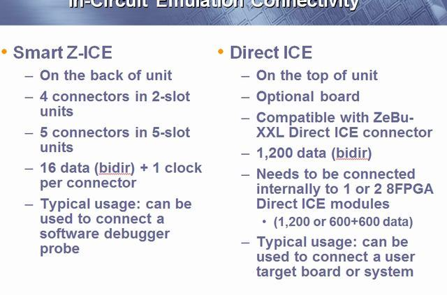

overview
company overview
Q:still V5 LX330? or need update，我记得现在的都已经是V7了。
A:这个是zebu，就停留在V5了。新的产品是Zebu3，已经是V7了。
hardware
three types
Q: define FPGA module，我看了好多unit，module，有点糊涂。
A：unit是机框，FPGA module是一块板子，slot是板子的插槽
Q: each module can be connected to a host PC, *just one? or many PC*，能一个连几个pc不？
A: 一个module只能连一个pc
Q: define system，有点糊涂
A: 就是system拉。

connectivity
Q: 16 data + 1 clock per each connector? 17 available pins ?
A: 这个是smart-ICE模式，用于少量的pin连接
Q: explain what is software debugger probe.
A: 仿真器
Q: 1200 data pins? no clock?
A: clock and data.
Q: what is this line mean?
A: 8FPGA是一代特殊的版本，只有这个版本才有Direct ICE。
Q:怎么平衡不同的线之间的延时，怎么同步？
A:数据比较低频，只需要在进入加速器后打一拍就行。
Needs to be connected internally to 1 or 2 8FPGA Direct ICE modules (1,200 or 600+600 data)

moduels
Q: what does this slide trying to tell me?这个slide想告诉我什么，只看到很多类似风扇的东西。
Q: what is 8FPGA/Direct ICE modules?
A: 8FPGA是一代特殊的版本，只有这个版本才有Direct ICE。
Q: look like there are many fans
A: yes
hardware diagram
我把下面的图标了号，有些模块不是很明白，我就一个一个问了。
1. pc host connected by PCIE card Q: is PC enough, most of time, a power server may crash down.
A: mostly, it's a linux server
2. what is smart Z-ICE, is it a connector or something
A: z-ICE is a mini mode of ICE, it support small amount of connectors
3. what is RTB, what is its function
A: it's a FPGA, reconfigurable test bench, synthesizerable code will be implemented in RTB
4. what does it mean by to other FPGA module, something like target?
A: fpga module in other slot or other unit.
5. what is the function of 5, it's like a mux?
A: yes
6. 6 11 12 all are memory, what are the difference of them
- trace memory is for debug
- what is DUT memory
- what is RLDRAM
- RLDRAM per DUT fpga, this FPGA mean fpga module , or each fpga in fpga module?
7. memory server
8. what is the function of RTB LX330 FPGA?
9. how can we set clock server
A: like CRG.
10. for probe
11. trace memory
12. memory
13. 7 13 all are momoery server, difference?
A: see mamule
14. FPGAs
15. is a slot?
A: yes
difference
Q: for 4/8/16 FPGA, there are slight difference, can you explain. 我从图上看，觉得这几个不同的module就是红色圈圈和绿色框框不一样，能解释一下吗？
see 6 and 12
A: see manule
software
emulation mode
| verification mode | specificaton |
|---|---|
| HDL co-sim | hdl in emu + simulator |
| signal level | c/c++ systerm c |
| transactional level | |
| vector file | vector |
| stand alone | synthesizable tb |
| ICE | target + hdl |
need more practice
compilation flow
back end flow
Q: what is in core definitons
Q: what is design verification envirement file
Q: what is the function of Debug DB
if you have time, please tell me something about this slide.
Q: why do we need edit netlist, what kind of edit?
Q: how do we handle tristate busses, use FPGA's internal resource or use hdl like a=express?b:c.
Q: tell me something about memory handleing , clock handling, clcok allocation,
Q: what is RTB FPGA netlist
Q: what is the diffrence between clock generator and clock handling
command line
commands are organized in the following categories
system utilities
| zInstall | board driver? |
| zSetupSystem | set up ZeBu system |
| zUtils | config |
| zConfig | creates hardware configuration |
| zUpdate | firmware |
RTL front end
| zrtlFrontEnd | analysis elaboration split |
| PostFe | front end post processor |
zFast synthesizer
| zFe | zFast |
| vhs | verilog synthesis |
| vhorder | VHDL |
| hcs\mixed | VHDL & verilog |
ZEMI
| zEmiComp | ZEMI-3 compiler |
| zEmiRun | ZEMI-3 runtime utility |
compilation
| zCui | synthesis management interface |
| zNetgen | gen fpga file |
| zMem | memory module |
| zTopBuild | top process |
| zPar | fpga place and route |
| zRTB\FE | front end firmware generator |
| zRTB\FW | back end firmware |
| zTime | Timing analysis utils |
| zDB | generate DB |
| zDbPostPro | debug db post process |
runtime
| zrun | runtime management |
| zServer | like server in pxp |
| zPinCheck | check connector |
| zPattern | apply pattern to design |
| bin2vcd | waveform |
| hex2bin | memory |
| zsvareport | sva |
| ztdb2fsdb | waveform |
| ztdb2vcd | waveform |
debug
| zBrower | …..看到这个，我有不祥的预感 |
| zselectProbes | prbobe |
gui
zCui
- list of all project source file
- compilation parameters
- automatically creates scripts and launch them
- parallel processing
- incremental process
prject profile
compilation profile
software compatible
for debug, compilation, runtime, board kernel, should compatible
and be aware of Xilinx ISE version
Q: what is cevision?
Q: what is setup scripts
initial setup
set ZEBU SYSTEM DIR
run zInstall
zInstall should be launched every time pc is power on. actually, 3 conditions:
- reboot
- zInstall is killed
- new version of tools is added to the systems.
prepare setup.zini
run zSetupsystem setup.zini
every time power off
$ export ZEBU_SYSTEM_DIR=<my_system_dir> $ zUtils initSystem
by default, only top level ports are visible
smart debug and other debug techniques
smart debug toolkit
static probes
- choosed signals are routed to the top of design,
- need recompilation
- limited numbers
- high speed
dynamic probes
- use Xilinx's internal scan path.
- unlimited probe
- no need recompilation
- slow down emulation
- only show registers
flexible local probes
- use FPGA's internal resource
- what is this local mean?
- add probe need recompilation
- consume FPGA resource
simulated combinational signals
need zFast
the whole view
trigger
16 triggers
static trigger: complex boolean condition
dynamic trigger: simple bus value, bus should be specified at compile time
list of probed signals must be defined at compilation time
concept not know very well
smart debug
就是那4种probe吧？
ZEMI-3 Transactors
没有接触过
SVA
能综合？
RTB
这个是什么？